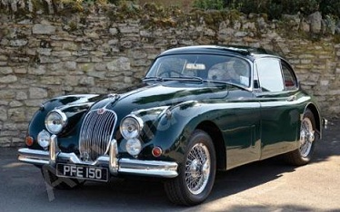

1960 Jaguar Xk150 roadster

This Beautiful Jaguar XK 150 Roadster is presented in black with a red interior. This XK150 has had a full ground up and documented restoration.
The body was stripped and painted black, the undercarriage has been detailed as well as having a new interior installed. The Engine has been rebuilt;
it has rebuilt carburetors, a new clutch and slave cylinder, new wiring harness and new convertible top along with a new tonneau closeout. All of the
chrome has been redone and new seals have installed throughout the car. This attractive Roadster runs smooth through an overdrive 4 spd transmission and
tracks very well. The car comes with the original title, restoration documentation, service records and receipts back to 1974